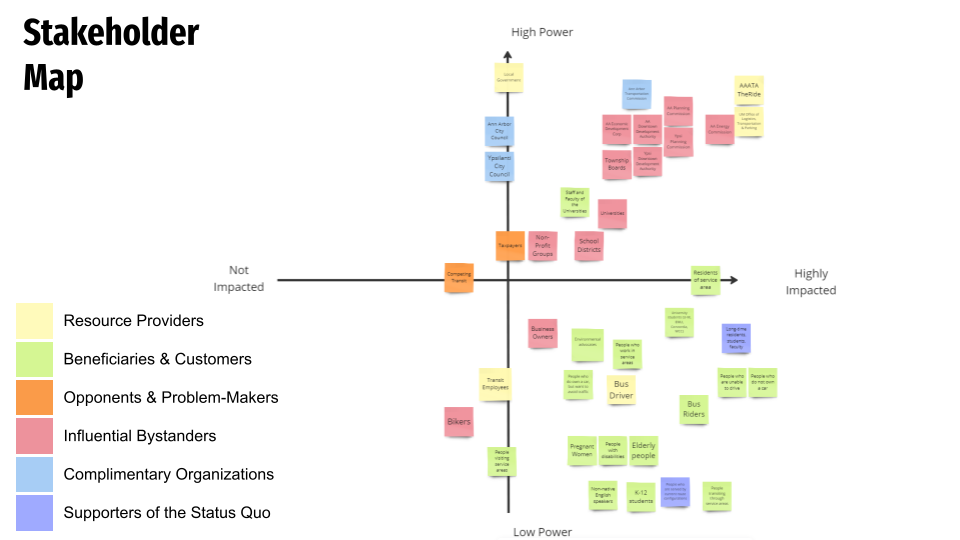
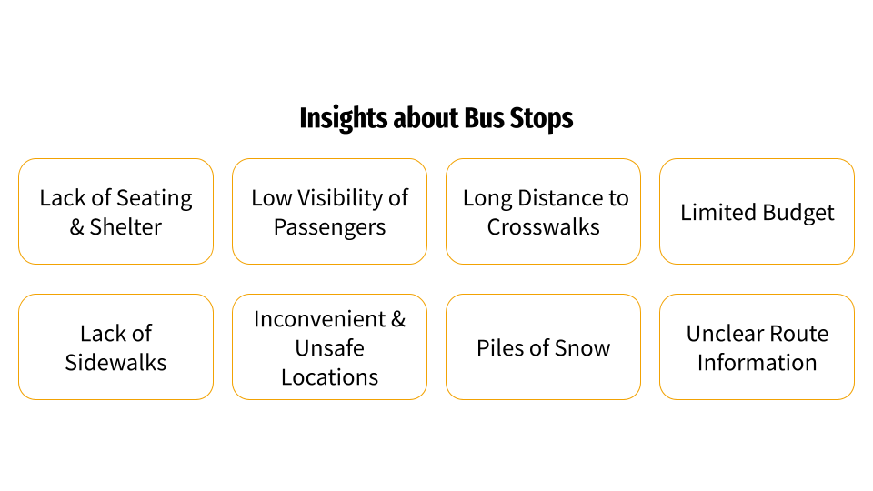

Stakeholder Engagement
To further understand the bus stop ecosystem in Ann Arbor, we conducted in-depth stakeholder interviews using ethnographic methods. These included:
- The Ride Administrators – We interviewed Jeff Pfeifer, Manager of Public Affairs and Engagement at TheRide. He shared the organization’s priorities and highlighted the limited resources available for infrastructure changes.
- Bus Riders – Through conversations with students, elderly residents, and daily commuters, we identified common pain points such as inconvenient stop locations, insufficient shelter, long detour routes, and a lack of clear maps or seating.
- Bus Drivers – We attempted to connect with drivers at the end of their shifts, but were unable to establish meaningful dialogue due to time and scheduling constraints.
- Kirk Westphal (The Neighborhood Institute) – We consulted with Kirk on how public transit supports connected and sustainable communities. He offered insight into broader structural and societal limitations in public transit development.
We contacted these individuals through personal networks and local online communities, including Ann Arbor-based Reddit and Facebook groups.
We created a stakeholder map identifying groups such as resource providers, direct users, policy influencers, and system-level opponents. Each group was evaluated in terms of their power and impact on the problem space.
Recurring challenges emerged during these interviews — including bus stops with no shelter or seating, poor visibility for drivers, and stops poorly integrated with pedestrian paths. These issues are often tied to regulatory constraints or logistical limitations.
In addition to interviews, we conducted a survey to gather broader public input via Google Forms. This survey explored people’s experiences using the bus system, their impressions of stops, and suggestions based on other cities they’ve lived in. It was distributed through our networks and social platforms.
These stakeholder interviews provided us with valuable insights into both the human and systemic sides of the bus stop experience. We uncovered user pain points such as discomfort, confusion, and poor accessibility, as well as organizational challenges like limited funding and infrastructure constraints. These learnings shaped our understanding of what solutions would be both impactful and realistically feasible — grounding our future design decisions in real-world perspectives.
